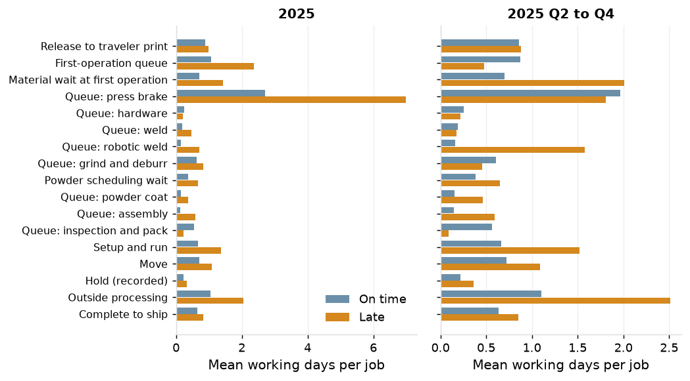
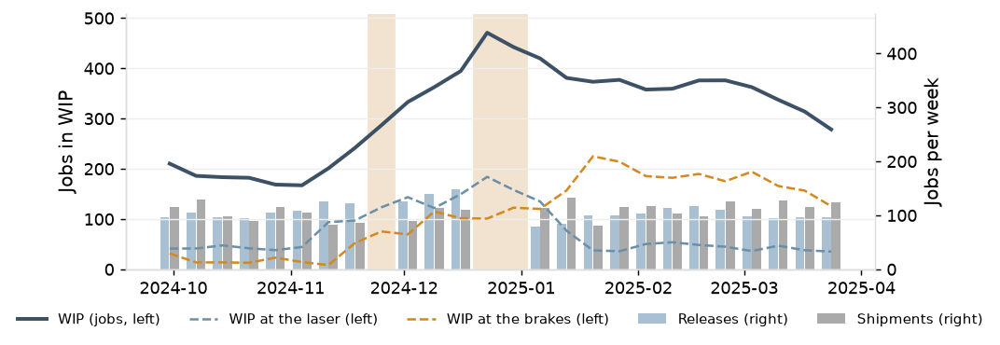

Project 1 A3
Lead time decomposition
Custom sheet-metal fabrication job shop, about 120 employees, one plant. Jobs shipped in 2025, whole year and Q2 to Q4; records from January 2023 to December 2025.
Sources: ERP, shop-floor data collection, quality, maintenance and attendance exports (batch 20261003T152921Z-20250101). All durations in working days, scheduled Saturdays counted.
Background and problem
The fixed quote of 10, 15 or 20 working days is met on 58% of jobs (74% in Q2 to Q4); 76.6% ship by the promised date (90.1% in Q2 to Q4) against the 95% key accounts require.
The 90th-percentile lead time is 25.2 days (18.2 in Q2 to Q4) against a median of 11.2 (9.2).
Current condition

Mean working days per job at each stage, on-time against late jobs, 2025 and Q2 to Q4.
Target
95% of jobs shipped by the promised date in every quarter, the first quarter included.
Analysis

Weekly WIP, releases and shipments, October 2024 to March 2025; shaded weeks have fewer than five working days.
- For the year the brake queue separates late from on-time jobs (6.98 against 2.71 days). In Q2 to Q4 it does not (1.81 against 1.96); late jobs there differ in material wait at the first operation, outside processing, the robotic weld queue and setup and run.
- The brakes hold 56% of queue time for the year and 40% in Q2 to Q4; the 90th-percentile brake queue is 11.3 days and 4.8.
- Floor WIP is 253 jobs against 245 at the quoted lead times for the year and 209 against 250 in Q2 to Q4: the gap between quote and delivery is dispersion, not level.
- The 2024 year-end build: 26% more brake standard hours released than in the third quarter, the lasers at 0.98, 0.95 and 0.93 for three weeks from November 11, WIP at 471 on December 23, and a first quarter of 2025 at 40.8% on time with 847 of the year's 1,226 late jobs.
Countermeasures
| Action | Owner | When |
|---|
| Attribute each late job to a cause and replace the late-reason code with a buffer status record (P2) | Production control manager | February 2026 |
| Size a fourth-quarter release and overtime plan on the shop model, and test a WIP cap and due-date dispatch (P5) | Plant manager | April 2026 |
| Restate quoted lead times as a percentile of measured lead time by routing class and brake load (P7) | Estimating and customer service manager | May 2026 |
Results
Measured baseline for 2025: on-time delivery 76.6% (90.1% in Q2 to Q4); quote met on 58% (74%); 90th-percentile lead time 25.2 days (18.2). Results of the countermeasures are reported in P2, P5 and P7.
Follow-up
Weekly: WIP by location, brake queue per operation, and material wait at the first operation. P6 evaluates these as leading measures of on-time delivery.